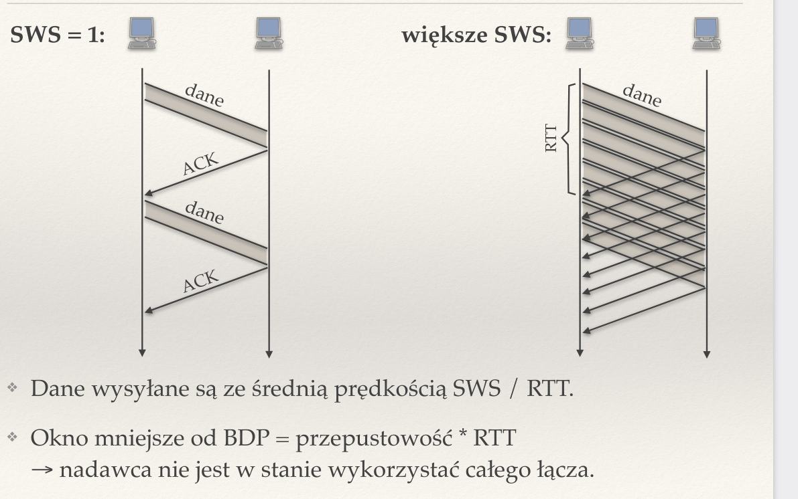
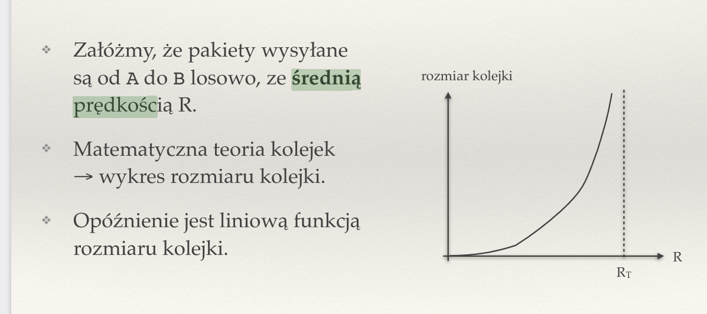
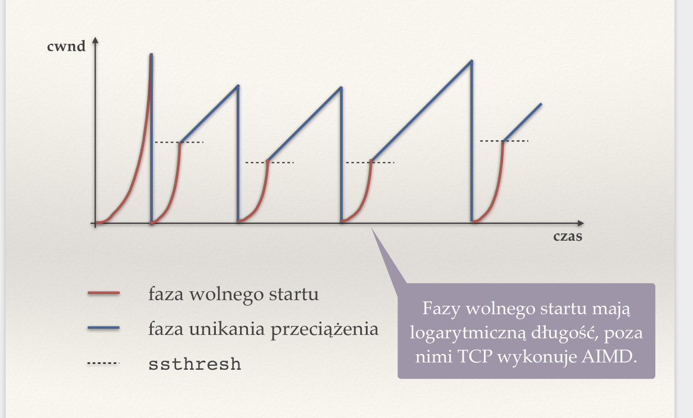
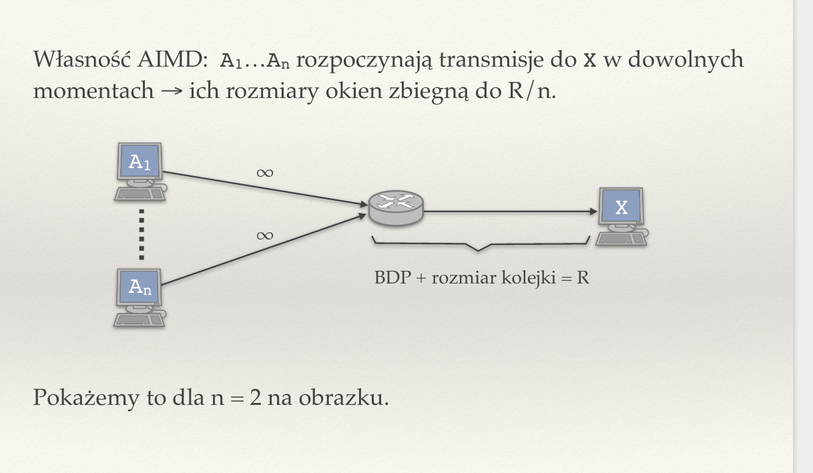
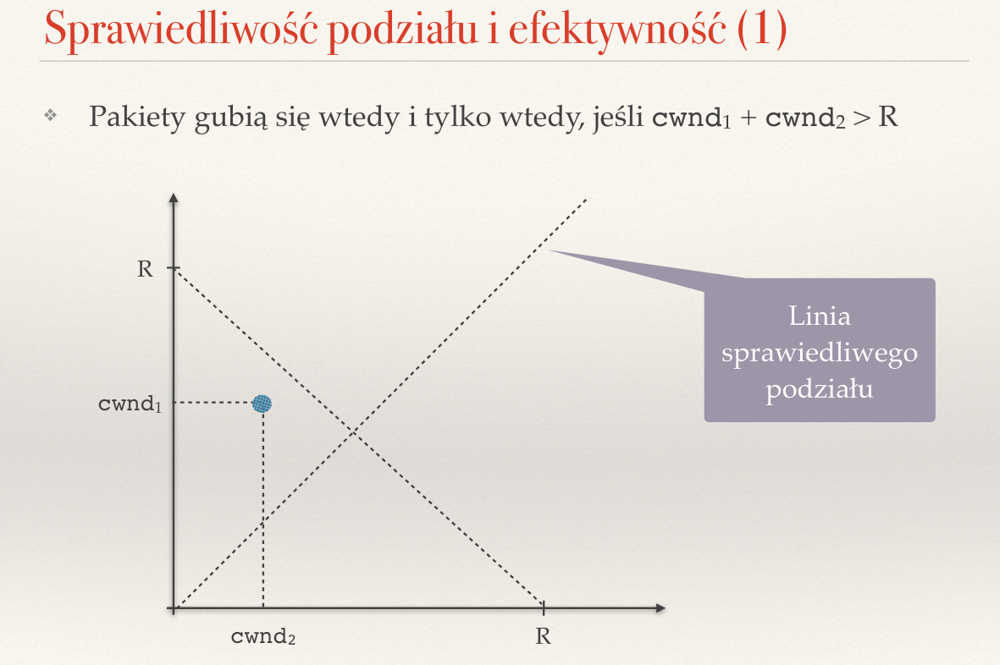
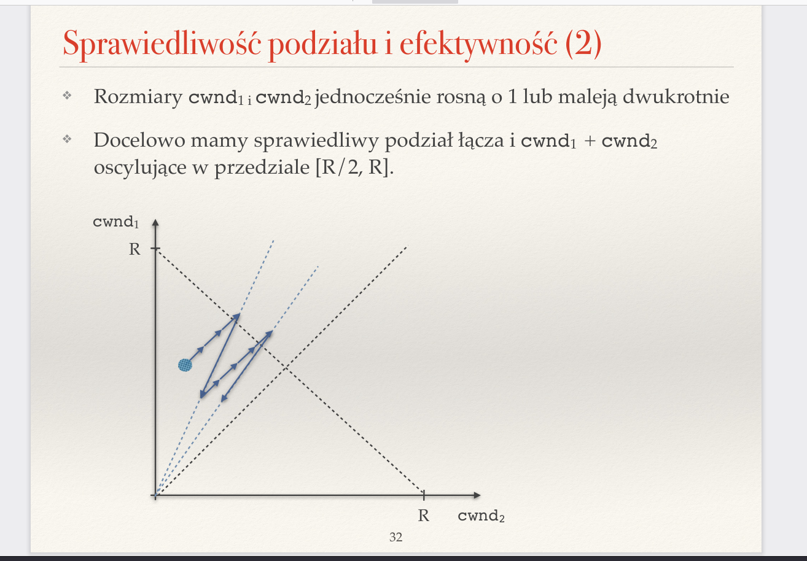
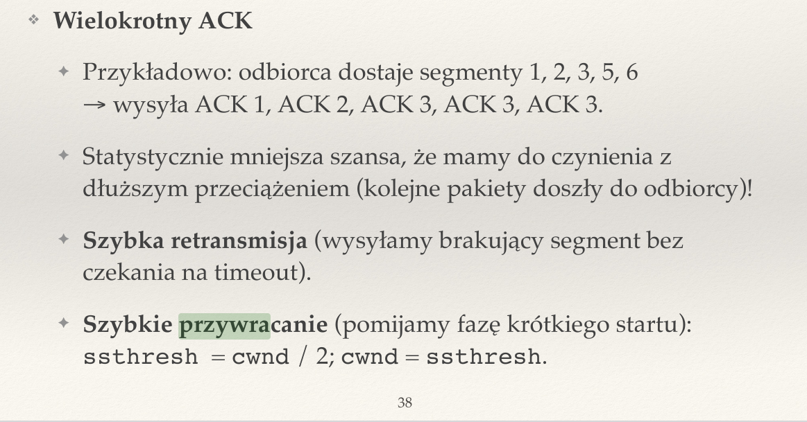
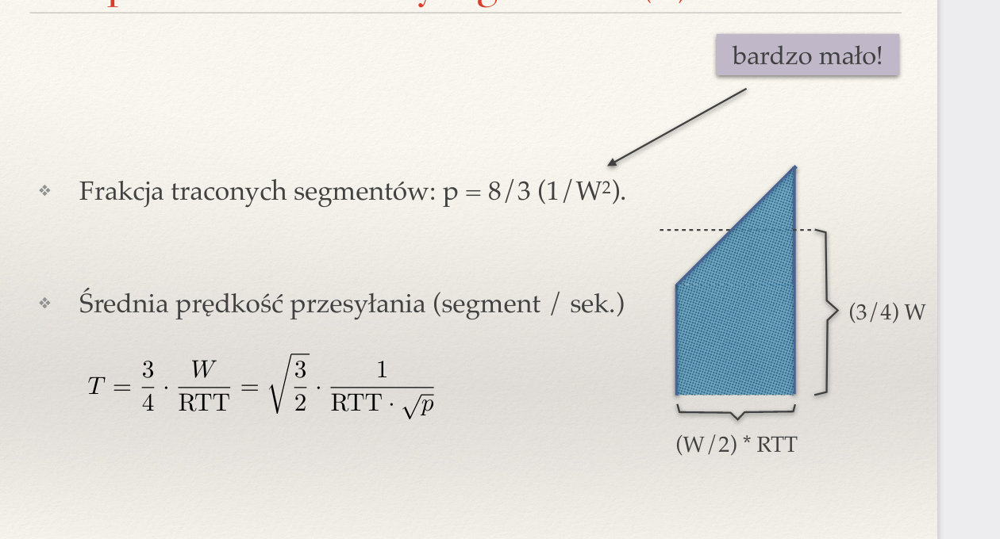
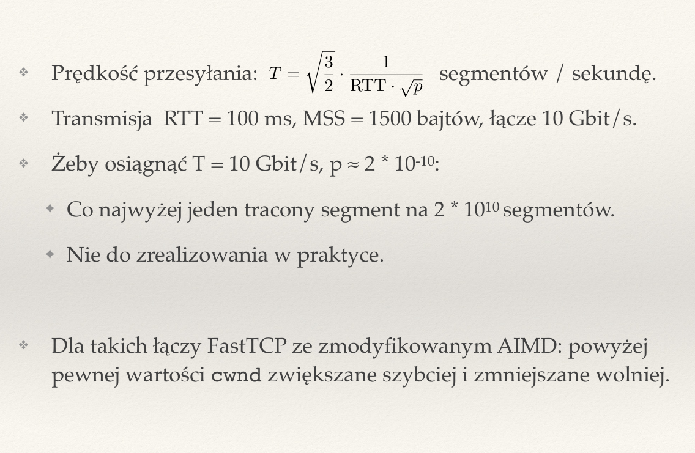

Created Thursday 23 June 2022
Zagadnienia
❖ Czym różni się kontrola przepływu od kontroli przeciążenia?
Kontrola przepływu — nadawca musi zwolnić, żeby odbiorca był w stanie nadążyć z odbieraniem pakietów.
Kontrola przeciążenia — sieć ma ograniczoną przepustowość i należy tak ograniczać komputery, by liczba wysyłanych przez nie pakietów nie była zbyt duża (bufory w routerach nie mogą się przepełnić, bo pakiety będą tracone)..
❖ Co to jest przeciążenie?
Przeciążenie to przepełnienie buforów (kolejek) w routerach. Pakiety są wtedy odrzucane.
❖ Na czym polega mechanizm opóźnionych potwierdzeń?
Mechanizm opóźnionych potwierdzeń — jeśli są dane do wysłania w drugą stronę, to wysyłamy ACK z tymi danymi, a w p.p. wymuszamy określony czas (ułamek RTT) pomiędzy kolejnymi ACK.
❖ Jaka jest zależność między rozmiarem okna nadawcy a prędkością transmisji?
Większe okno to większa prędkość transmisji. Dane są średnio wysyłane z prędkością rozmiar okna nadawcy / RTT.
Jeśli okno jest mniejsze od BDP = przepustowość * RTT, wtedy nadawca nie wykorzystuje całego łącza.

❖ Czy nieskończone bufory rozwiązałyby problem przeciążenia?
Nie, ponieważ bufory generują opóźnienie. Jedyne w czym pomagają, to że pakiety nie byłyby tracone.
❖ Jak zależy średni rozmiar kolejki od średniej prędkości nadchodzenia pakietów?
Rośnie do nieskończoności wraz ze wzrostem prędkości.

❖ Jakie są cele kontroli przeciążenia?
- Wysokie wykorzystanie łączy
- Sprawiedliwy podział łącza
- algorytm powinien być rozproszony i szybko reagować na zmiany sieci
❖ Jak można definiować sprawiedliwy podział łącza? Co to jest max-min fairness?
Definiować można na wiele sposób, np. każdemu po równo, ale sensownym wydaje się wprowadzić politykę max-min fairness, wg. której podział jest sprawiedliwy, gdy wszyscy mają taki udział w łączu, że nie jesteśmy w stanie zwiększyć udziału żadnego z komputerów, nie zabierając udziałów innemu z nich (który jest wolniejszy lub tak samo szybki). Innymi słowy nie możemy nikomu zrobić lepiej, nie robiąc gorzej komuś innemu.
❖ Na jakiej podstawie zmienia się rozmiar okna przeciążenia?
Na podstawie utraty pakietów. Okno przeciążenia (congestion window) rośnie o 1/cwnd przy każdy poprawnie wysłanym pakiecie (ACK wróciło), więc po RTT cwnd zwiększy się o 1. Przy pakiecie zgubionym lub opóźnionym maleje o połowę.
❖ Kiedy TCP wnioskuje, że pakiet zaginął?
Przekroczyliśmy timeout albo otrzymaliśmy podwójne potwierdzenie.
❖ Opisz algorytm ustalania rozmiaru okna przeciążenia
W AIMD okno przeciążenia (congestion window) rośnie o 1/cwnd przy każdy poprawnie wysłanym pakiecie (ACK wróciło), więc po RTT cwnd zwiększy się o 1. Przy pakiecie zgubionym lub opóźnionym maleje o połowę. W TCP dodajemy jeszcze fazę wolnego startu. Polega ona na tym, że zaczynamy od cwnd = MSS (maximum segment size), a po każdym ACK zwiększamy cwnd o MSS (dokładnie jak w AIMD, ale mamy przeskalowane dane — MSS zamiast 1). Oznacza to, że co RTT mamy dwukrotny wzrost cwnd, czyli rośnie ono wykładniczo.
Przy utracie pakietu ustawiamy segment size threshold (ssthreshold) na cwnd/2 i uruchamiamy wolny start, aż cwnd > ssthresh.
Wolny start ma na celu próbkowanie łącza, by dowiedzieć się, ile najwięcej jesteśmy w stanie wysyłáć.

❖ Rozwiń skrót AIMD. Czego dotyczy?
AIMD — Additive Increase, Multiplicative Decrease to algorytm kontroli przeciążenia, który polega na powolnym zwiększaniu cwnd, gdy udaje się poprawnie wysyłać dane, a gdy tylko pakiety zostają tracone, wtedy cwnd maleje o połowę.
❖ W jaki sposób AIMD gwarantuje sprawiedliwy podział łącza?
W AIMD rozmiary okien zbiegają do R/n, gdzie R to przepustowość, a n to liczba urządzeń.



❖ Opisz fazy unikania przeciążenia i wolnego startu w TCP.
Unikanie przeciążenia tak samo jak w AIMD — co RTT wysyłamy cwnd/MSS segmentów. Jeśli wszystkie są potwierdzone, to zwiększamy cwnd o MSS. Jeśli jakiś pakiet zaginął (przekroczony timeout albo podwójne potwierdzenie), wtedy zmniejszamy cwnd dwukrotnie.
Wolny start — zaczynamy od cwnd = MSS i zwiększamy o MSS dla każdego przesłanego pakietu. Po RTT wzrośnie dwukrotnie, wiec cwnd rośnie wykładniczo. Faza trwa do utraty pierwszego pakietu.
❖ Opisz mechanizm szybkiej retransmisji i szybkiego przywracania.
Szybka retransmisja — wysyłamy brakujący segment bez czekania na timeout. Przydatne, ponieważ często jakiś pakiet nie dojdzie, bo nawali karta sieciowa lub coś innego, niekoniecznie jest to przepełnienie kolejki. Wtedy możemy go szybko dosłać.
Szybkie przywracanie — pomijamy krótki start. sstresh = cwnd / 2, cwnd = sshtresh.

❖ Na czym polega mechanizm RED?
RED — Random Early Detection. Mechanizm routera, który wspomaga kontrolę przeciążenia. Router na trasie wyrzuca losowe pakiety. Prawdopodobieństwo wyrzucenia jest ustalane jako rosnąca funkcja średniej długości kolejki. Nie reaguje na krótkotrwałe zwiększenia kolejek. Pomaga utrzymać krótsze kolejki, przez co mamy mniejsze opóźnienia. Desynchronizuje strumienie, przez co zmniejszają swoje prędkości w różnych momentach.
❖ Opisz działanie mechanizmu ECN (explicit congestion notification).
ECN — explicit congestion notification. W nagłówku IP możemy w polu typ usługi wstawić informację o tym, że prawdopodobnie występuje przeciążenie. Router ustawia te bity w nagłówku IP, a odbiorca ustawia bity ECN w nagłówku TCP ACK. Nadawca reaguje na taki pakiet jak na utratę pakietu. Pozwala to na szybsze reagowanie na przeciążenia — bez konieczności tracenia pakietów.
❖ Jaka jest relacja w AIMD między przepustowością a traconymi pakietami?
Przepustowość jest zależna od odwrotności pierwiastka z liczby traconych pakietów.


❖ Jakie modyfikacje wprowadza FastTCP do AIMD? Dlaczego?
FastTCP to protokół, który pozwala szybkim łączom zachować wysoką sprawność mimo utraty pakietów. Powyżej pewnej wartości cwnd jest szybciej zwiększany i wolniej zmniejszane. Wynika ono stąd, że by zachować sensowną przepustowość konieczne jest, by tracić nierealnie małą liczbę pakietów.
/pasted_image.png){kind=link}
/pasted_image001.png){kind=link}
/pasted_image002.png){kind=link}
/pasted_image003.png){kind=link}
/pasted_image004.png){kind=link}
/pasted_image005.png){kind=link}
/pasted_image006.png){kind=link}
/pasted_image007.png){kind=link}
/pasted_image008.png){kind=link}